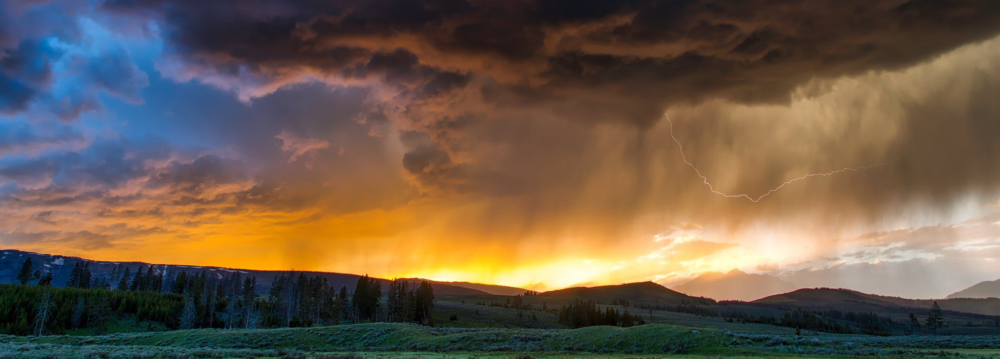

Contact Us
Do you have questions, comments, feedback? Reach us at 315-626-9187 or intheknow@email.com. We would love to hear from you! You can also follow us on social media.


Accurate weather always.
Welcome to In the Know Weather, the place to come to learn everything you've ever wanted to know about the weather in the Preston, Soda Springs, and Fish Haven area. Here on our homepage, you'll find information about each of the towns such as events, historical information, and other cool facts.

Our anual photo contest begins next week! For three years, In the Know Weather has hosted an annual photo contest where residents of Preston, Fish Haven, and Soda Springs submit their best weather-related photos. Neighbors and friends vote for the best photo in their town, and then that finalist goes on to compete with other towns for first place! A small cash prize is rewarded to the winner.
Contestants can submit their photos by email to photos_weather@mail.com with a title, their name, contact info, and a brief description. Please submit any photos you would like considered for the contest by August 4th. After they close, we will display the photos in our gallery for everyone to vote! Watch for more details to come!
Accompanying this article is last year's first place photo, The Valley Lake by Mariea Jenkins, taken at Glacier National Park. Once again, great job Mariea!
This breathtaking image is just one example of what you'll find amongst the photos submitted for this contest, so even if you aren't participating, keep an eye out for updates. They're worth viewing!

Do you have questions, comments, feedback? Reach us at 315-626-9187 or intheknow@email.com. We would love to hear from you! You can also follow us on social media.